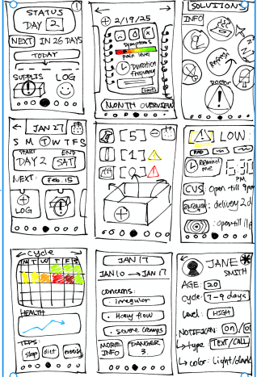
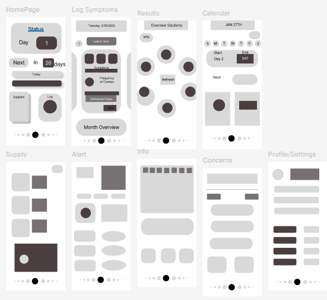
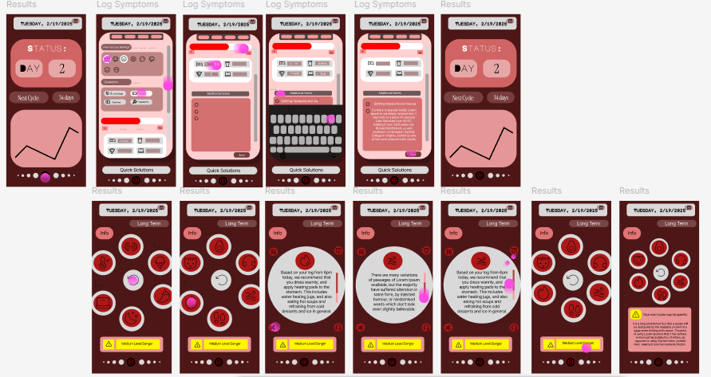

For this project I was combining it with another class where I designed a period tracking app. The proposal was to create an app that is more suited and targeted towards teens and young adults who have a hectic schedule and lack consistent healthy habits due to work and skipping meals and water. In addition, because of various reasons, results in experiencing unstable cycles with differing symptoms, and severe cramps. After market research and from my own experience, I wanted to create a secure and effecient AI that would be able to calcualte based on personal data to create a serious of short and long term solutions. This way, young women would be able to get a reliable warning not from series of controversing reddits and websites, and in addition save the costs for a professional medical visit.
Many of the products on today's market has advertised prenium features such as educating the users on what to do when for example, severe cramps occurs, late period, etc. but these are hidden behind a subscription wall. In addition many of the apps focus more on ovulation and pregnancy tracking instead of education. Thus I first created a basic gray-box on figma and then used prototyping features to simulate the interactions, and finally created a website using github that has the function of some of the UX and the UI of the prototype. One thing I struggled with while coding it was the iphone clock that stubbornly wouldn't rest on the actual number but instead the spaces.


